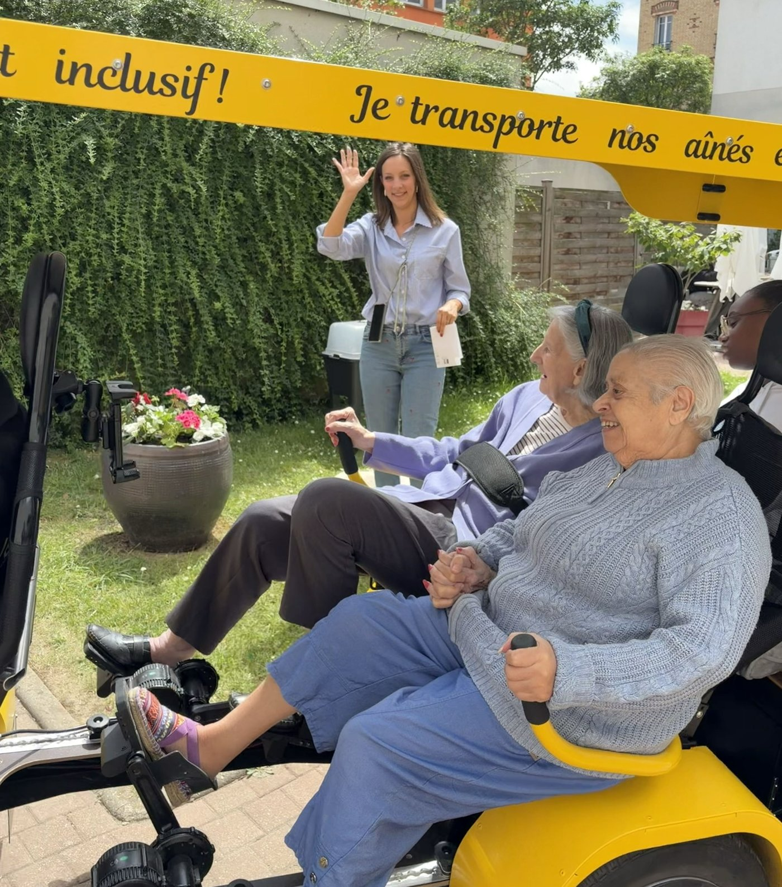
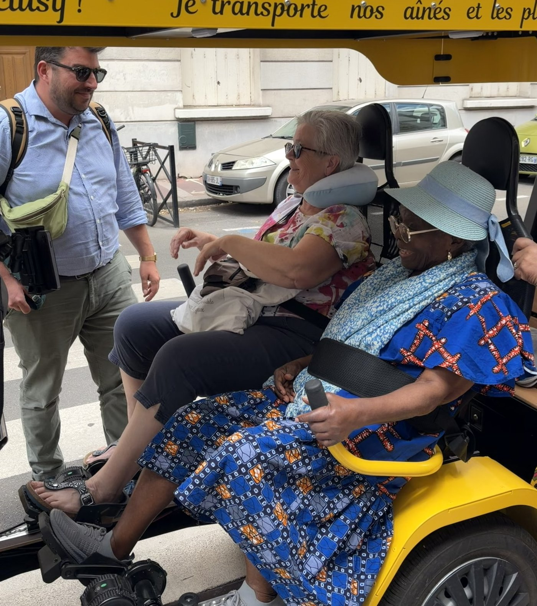
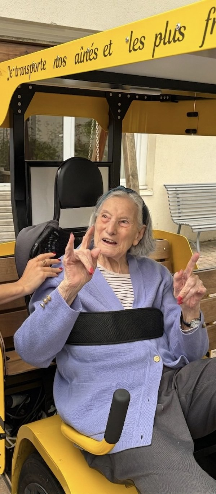

Vélo à assistance électrique
Vitesse maximale 25 km/h, route et pistes cyclables.
Grâce à un véhicule adapté.
Notre solution : un service clé en main, pensé pour s'intégrer à votre établissement sans investissement matériel, ni effort logistique. Un déploiement simple pour rester proche de vos publics.


Nous vous mettons à disposition le OuiCycle sur des demi-journées, par sessions de 30 minutes.
Par session : 3 bénéficiaires accueillis.
Par séance : 12 à 15 résidents qui en profitent.
Vitesse maximale 25 km/h, route et pistes cyclables.
Chaque bénéficiaire pédale selon ses capacités, sans incidence sur la vitesse du véhicule.
Position assis-couché pour un maintien optimal.
Le véhicule reste bien visible sur pistes et routes.

Le conducteur-animateur échange avec l'équipe soignante sur les bénéficiaires inscrits.
Le parcours est présenté aux bénéficiaires. Chacun choisit sa place, les ceintures et le maintien sont vérifiés.
Chacun pédale à son rythme ou se laisse porter par l'assistance électrique. Le trajet alterne pédalage et discussions.
L'animateur restitue la séance à l'équipe. Il note les indicateurs et complète la fiche bénéficiaire dans la plateforme de suivi.
Rendre compte des bienfaits sur vos bénéficiaires, c'est s'assurer d'une continuité avec le travail de vos équipes. Ensemble, développons de nouvelles formes d'activité physique adaptée.

Grâce aux 4 pédaliers indépendants, chacun pédale à son rythme.
Discuter, passer par des lieux familiers, c'est stimuler sa mémoire.
L'inclusion crée du lien et encourage l'estime de soi.
Sons, lumière, grand air : l'environnement redevient central.